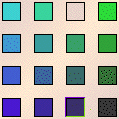

| In our software allowed transitions
are represented by a 4 × 4 array of squares. |
|
Think of the rows as labeled 1 through 4, and the columns as
labeled 1 through 4.
If the square in the ith row and jth column is
filled, then Tj can follow Ti.
If the square is empty, Tj cannot follow Ti. |
|
|
| For example, this array allows all combinations except that T3
cannot follow T1. |
|  |
Here is the corresponding IFS.
Recaling the notion of addresses of portions of a fractal, we
see that the square 31 is empty.
In addition, subsquares 131, 231, 331, and 431 are empty.
Continuing, every subsquare with address containing 31 is empty.
|
|
|